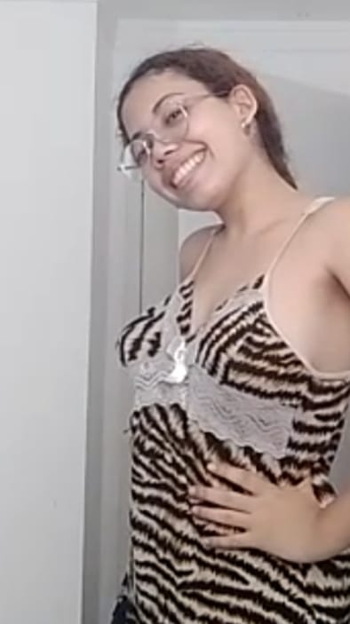
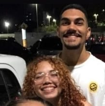
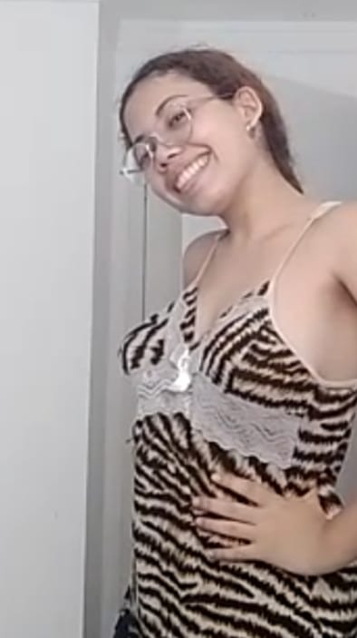
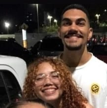

Sobre o site
Oi amor, eu criei este site para mostrar a você o quanto é especial e o quanto te amo. Sei que você está passando por um momento difícil com o resultado do Sisu e do Enem, mas quero que saiba que eu acredito em você e em todo o seu potencial. Você é uma pessoa incrível, inteligente e dedicada, e tenho certeza de que você vai superar essa fase e conquistar todos os seus objetivos. Lembre-se de que eu estarei sempre ao seu lado, te apoiando e te incentivando em tudo o que você fizer. Não desista dos seus sonhos, porque você é capaz de realizá-los. Eu te amo muito e estou aqui para o que precisar.
Fotos
Fotinha nossa S2.
 



Mensagem para você
Aqui esta uma mensagem que fiz porque eu sei q voce esta triste porcausa da nota do enem.
Oi amor, lembra quando te disse que queria criar um site, mas ainda não tinha escolhido o tema? Então, finalmente encontrei o tema perfeito: você, minha futura esposa. Tudo começou quando te vi pela primeira vez, com sua alegria, beleza e fofura, mas achei que talvez não fosse seu tipo, então deixei isso pra lá (isso foi no primeiro e no segundo ano). No começo de janeiro, tive a sorte de te ver novamente, mas não tive coragem de falar com você. Então, chegou a festa da Evely, e lá eu vi o quão linda você é. Eu tentei me aproximar, mas não deu certo. Eu lembro que na época, o Arthur foi até a sua casa para levar uma arte, e eu queria estar lá também, mas não dava por causa do seu pai e tudo mais. Mas eu nunca desisti de você, porque eu sabia que era uma oportunidade única e que jamais encontraria alguém como você de novo. Por isso, quando te dei um selinho, voltei pra casa feliz da vida, porque tinha beijado a coisa mais perfeita da minha vida: você, meu amor. Sua mae falou do seu cabelo ser curto e feio... amor sem brincadeira vc nao fica feia nunca NUNCA, ouviu? NUNCA vc e umas das coisas mais linda do mundo. Eu sou grato todos os dias por ter você ao meu lado, nao gosto de te ver triste porcausa do enem esquece isso e bola pra frente, espero passar o resto da minha vida te fazendo feliz, assim como você faz comigo. Te amo mais que tudo.